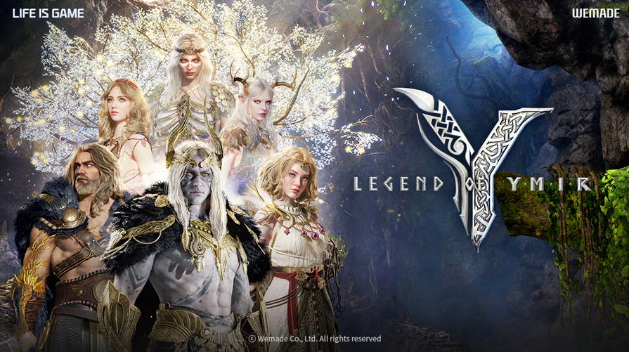
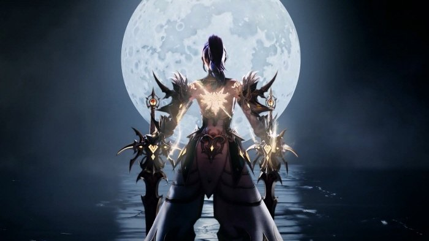
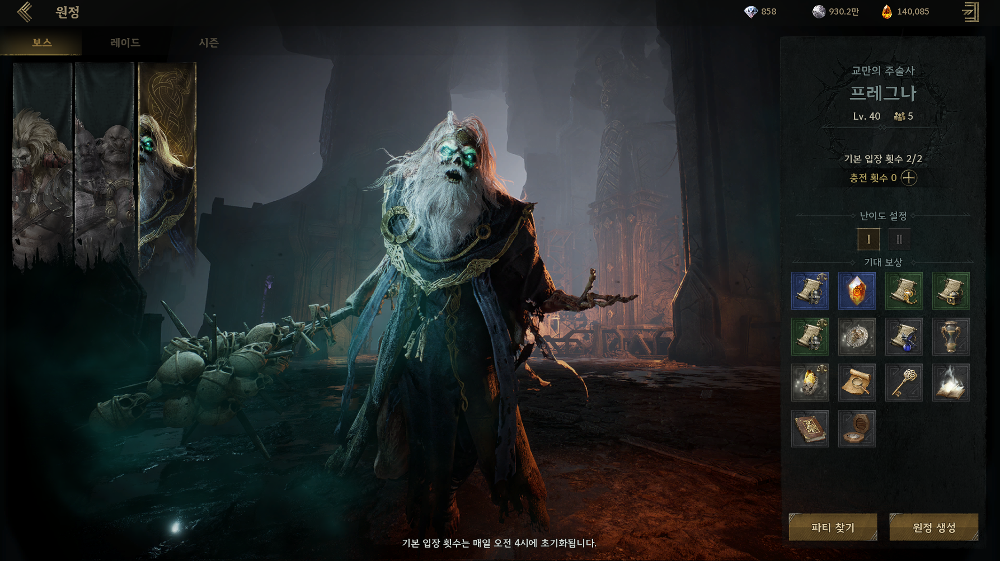
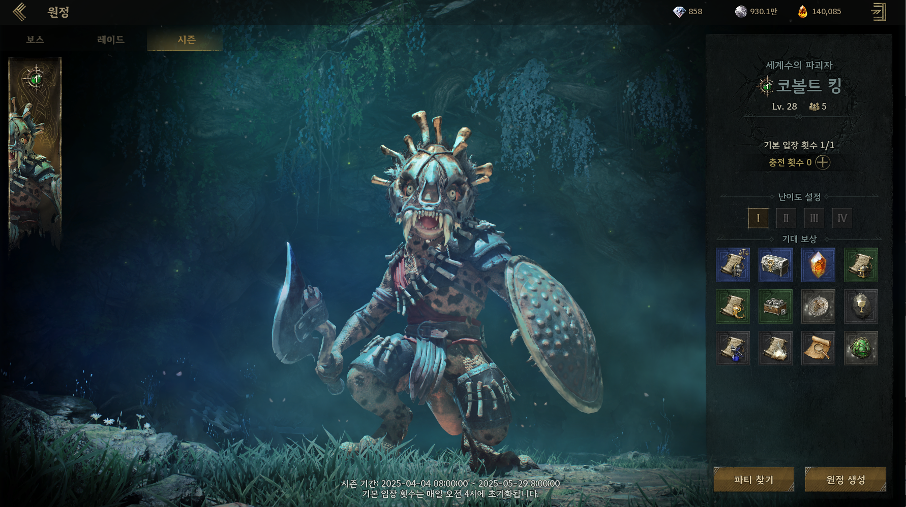

위메이드 (WeMade)
전투 / 전투 시스템 기획 — 레전드 오브 이미르 (Legend of Ymir)

Legend of Ymir · MMORPG— 담당 업무 —
- PC 전투 시스템 / 액션 / FX 설계 및 검수
- PvP 시스템 — 룰셋 · 매칭 · 보상 구조 기획
- Season 1 / 2 / 3 컨텐츠 기획 및 라이브 업데이트 운영
- 보스 컨텐츠 — 프레그나 · 코볼트 킹 등 신규 보스 설계 / 검수
- Scene Capture · 연출 시스템 검수
— 인게임 컨텐츠 —

— Cinematic —

— Boss · 프레그나 —

— Boss · 코볼트 킹 —
— 주요 성과 —
- 2025.02.25 한국(KR) 정식 런칭 / 2025.10.28 글로벌(GL) 런칭 참여
- 시스템 기획 메인 담당 — 책임감 있게 프로젝트 리드
- 전투 / PvP 시스템 — 라이브 운영 단계의 안정화 주도
— 경력 비중 —
- 전체 경력 중 40% — 가장 높은 비중을 차지하는 메인 커리어